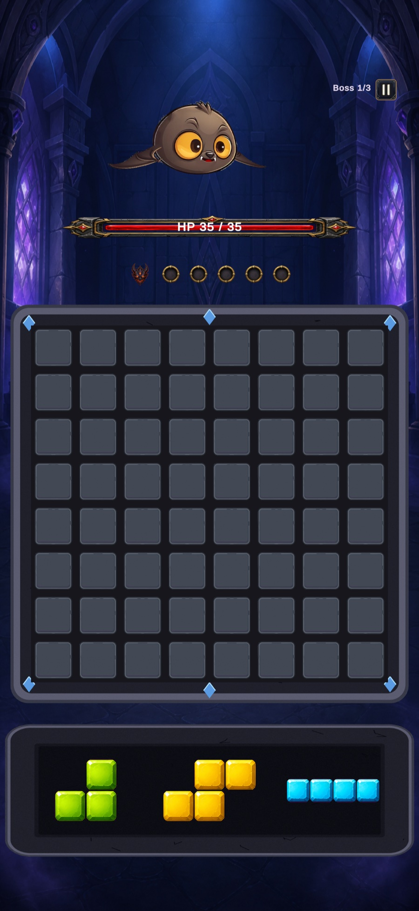
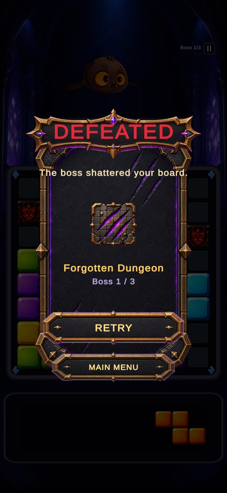

1. Place your pieces
Three pieces in the tray. Pick one, find a spot for it, and try not to strand yourself for the next turn.
A Unity puzzle-battler I'm building on my own, where clearing a line doesn't just score points. It takes a chunk out of the boss standing over your board.
Still in development, so there's no public build to try yet. What follows is where the game is right now: how it plays, what's under it, and the calls I've made so far.




Block puzzles are easy to pick up and easy to put down. Every clear feels the same as the last one, so after ten minutes there's no reason to keep going. I kept coming back to one idea: what if the thing you're clearing lines against could hit you back? Everyone already knows how block puzzles work, and everyone already knows how boss fights work. I wanted to see what happens when you make one drive the other.
Puzzle rules are fine on their own. Boss rules are fine on their own. Putting them on the same board is where it gets ugly. If a boss attack doesn't really wreck your plan, the fight is just decoration. If it wrecks it too hard, the board turns to mush and you stop being able to read it. So the whole job is building pressure that still feels fair while it's actively ruining your day, on a phone screen, with nowhere to put a tutorial.
Three pieces in the tray. Pick one, find a spot for it, and try not to strand yourself for the next turn.
Fill a row or column and it goes, with enough punch behind it that you feel like you did something.
That clear comes off the boss's health. This is the bit that turns a puzzle into a fight.
The boss drops junk on your board and you have to dig out of it. Telegraphed a turn early, so it's on you.
A bigger grid would open up better combos. I stayed at 8×8 because the board and the boss's health bar have to fit in one glance on a phone held upright. What it costs: no room for the really elaborate multi-line setups. Worth it, because the boss layer is already asking a lot of a new player, and the grid shouldn't add to that.
The easy version is a countdown: beat the boss before time runs out. I made attacks drop obstacles onto the board instead, so the fight and the puzzle are the same problem rather than two things happening near each other. What it costs: it's much harder to keep fair. One badly timed attack and it reads as bad luck, not difficulty. I fixed that by telegraphing every attack a turn early, so you can see it coming and play around it.
One random piece per turn is far easier to balance. Three means you're planning several moves ahead and choosing an order, which is where the good decisions live. What it costs: more to think about every single turn, so what shows up in the tray and when it refreshes took real tuning, since a mobile session should feel quick, not exhausting.
It isn't shipped, and I'm not going to pretend otherwise. What it does show is that I can take a genuinely awkward design problem (two mechanics fighting over one board) and get it running, solo, from Unity architecture through UI to balance. Here's what I still have to earn:
This is the project I spend my evenings on. Happy to talk through the design, or show you the current build.
Get in Touch